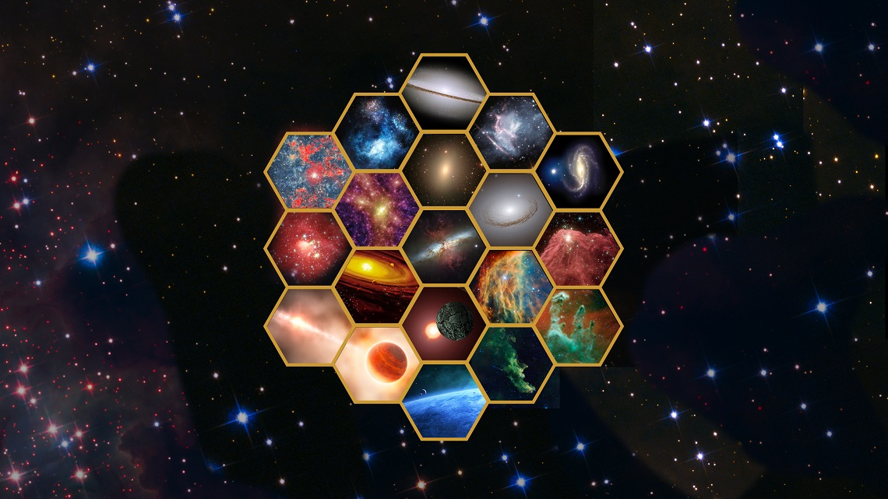
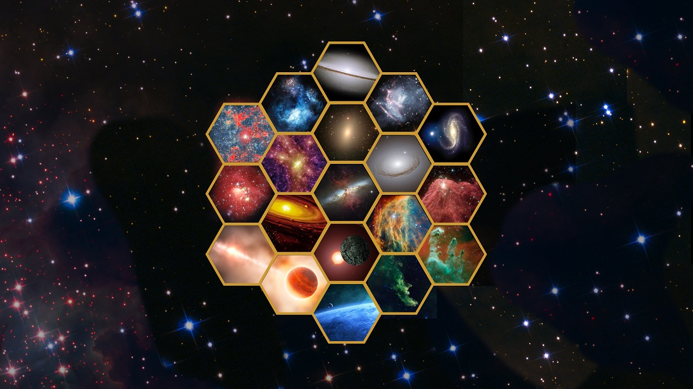

星空属于每一个人。

Credit: Image credit: The Space Telescope Science Institute
Source: https://www.flickr.com/photos/nasawebbtelescope/38438218522/

Credit: Image credit: The Space Telescope Science Institute
Source: https://www.flickr.com/photos/nasawebbtelescope/38438218522/